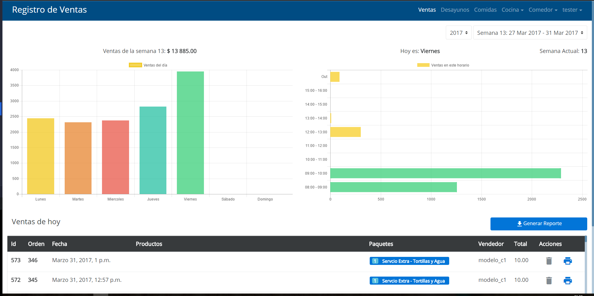
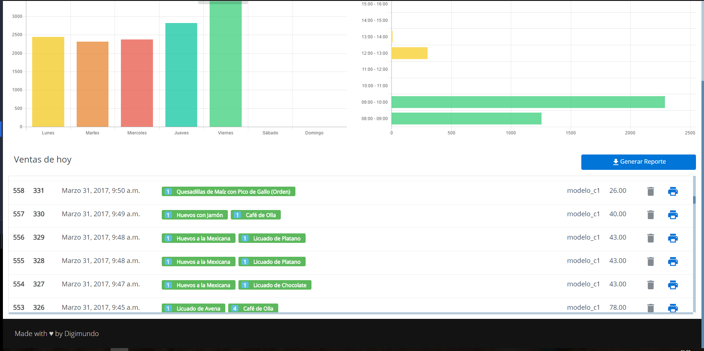

-

Ventas
Esta pantalla muestra las ventas realizadas por semana, así como el detalle de ventas por día. -

Ventas
También muestra una lista con información detallada del ticket de venta, su contenido y la hora de la misma. -

Desayunos
Pantalla que muestra las diferentes opciones de alimentos disponibles para la venta. -

Cocina
Pantalla ubicada en la cocina, que permite al personal preparar la orden en base los tickets. -
Registro de comensales
Registro completo por semana y diá, de las personas que acceden al servicio de comedor.